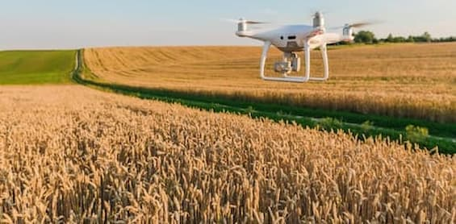

Bet on Tech - Alimentando o futuro.
Modelos de cultivo eficiente.
Agricultura de precisão: A agricultura de precisão utiliza tecnologias como sensores, drones e sistemas de posicionamento global (GPS) para coletar dados em tempo real sobre as condições do solo, clima e plantas. Essas informações são usadas para otimizar o uso de fertilizantes, água e pesticidas, garantindo que sejam aplicados apenas onde são necessários, reduzindo o desperdício e os impactos ambientais.

Hidroponia: A hidroponia é um método de cultivo sem solo, em que as plantas são alimentadas por meio de uma solução nutritiva. Esse sistema permite um controle preciso dos nutrientes fornecidos às plantas, além de economizar água, espaço e reduzir a incidência de doenças e pragas.
Aquaponia: A aquaponia combina a criação de peixes em tanques com o cultivo de plantas em água recirculante. Os resíduos dos peixes fornecem nutrientes para as plantas, enquanto as plantas filtram a água para os peixes. Esse sistema simbiótico permite o uso eficiente de recursos, pois os nutrientes são reciclados, reduzindo a necessidade de fertilizantes externos.
Cultivo vertical: O cultivo vertical envolve o uso de estruturas em camadas, como estufas verticais ou paredes vivas, para maximizar o espaço de produção. Essa técnica é especialmente útil em áreas urbanas, onde o espaço é limitado. O cultivo vertical também permite o controle mais preciso das condições ambientais, como iluminação, temperatura e umidade, resultando em uma produção mais eficiente.
Agrofloresta: A agrofloresta é um modelo de cultivo que combina árvores frutíferas, culturas agrícolas e vegetação nativa em uma mesma área. Esse sistema imita a estrutura de uma floresta natural, aproveitando os benefícios da diversidade de espécies, proteção do solo, ciclagem de nutrientes e sombreamento. A agrofloresta é uma abordagem sustentável que promove a produtividade a longo prazo, reduzindo a necessidade de insumos externos.
Esses são apenas alguns exemplos de modelos de cultivo eficiente que estão sendo aplicados atualmente. Cada um deles oferece vantagens únicas em termos de produtividade, sustentabilidade e conservação de recursos.